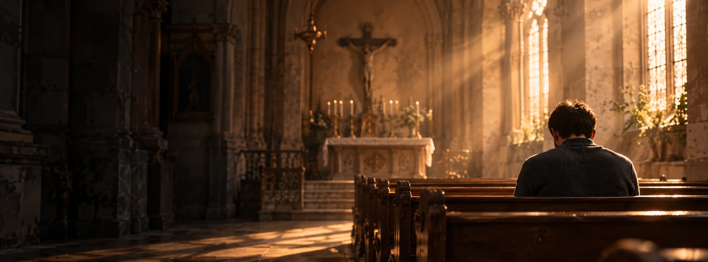

Autorskie tygodniowe plany modlitwy. Pierwsze dwa dni każdego planu są dostępne bezpłatnie.
7 dni · tekst
Tydzień spokojnego powrotu do modlitwy. Każdego dnia pięć minut, jedno pytanie i mały krok.

Siedem autorskich rozważań o przyjmowaniu dobra, relacjach i nadziei — bez pomijania trudnych doświadczeń.